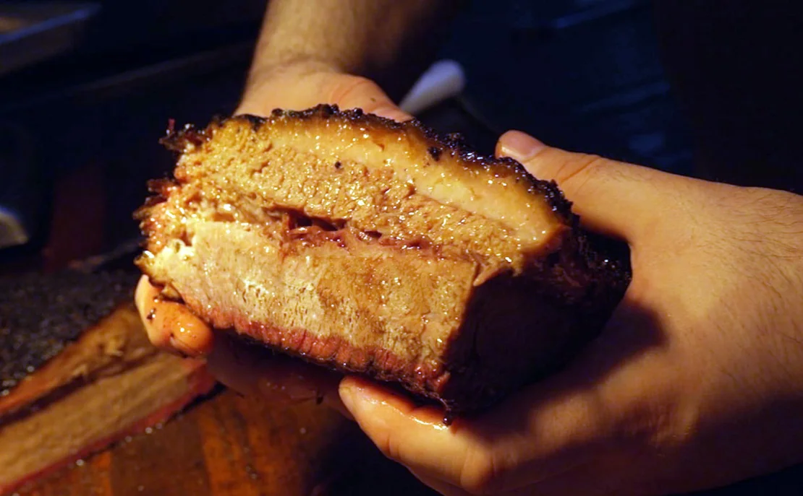

This hidden BBQ joint is taking Dubai’s food scene by storm
Al Quoz Industrial Area 4 looks much like the other three: a vast complex of low-rise warehouses, dusty roads passing factories and storage units, trucks and lorries ferrying goods to and fro. It looks nothing like the Dubai of travel brochures or Instagram — no iconic skyscrapers, no golden beachfront, no glitzy lights, no luxe resorts.